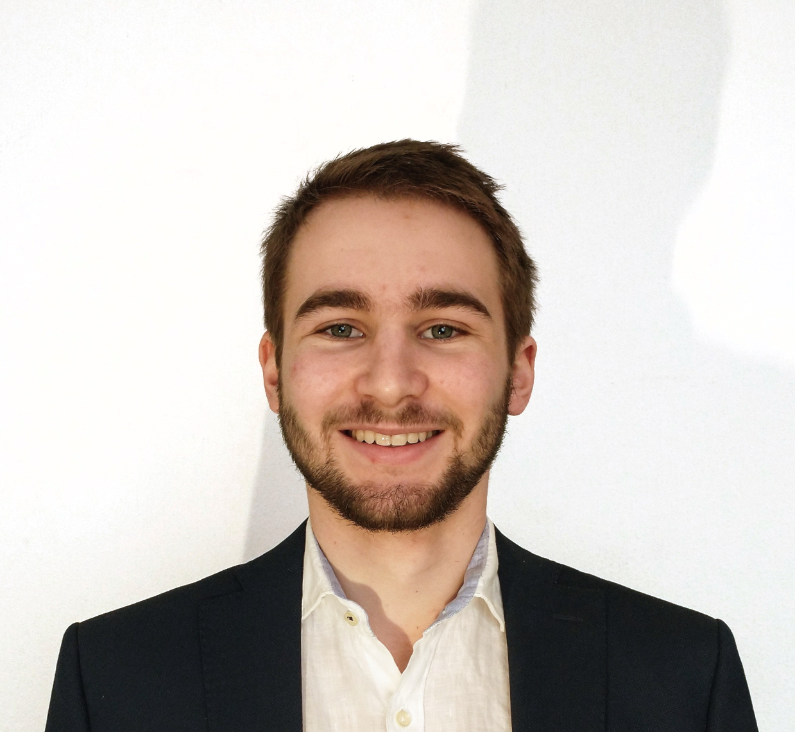
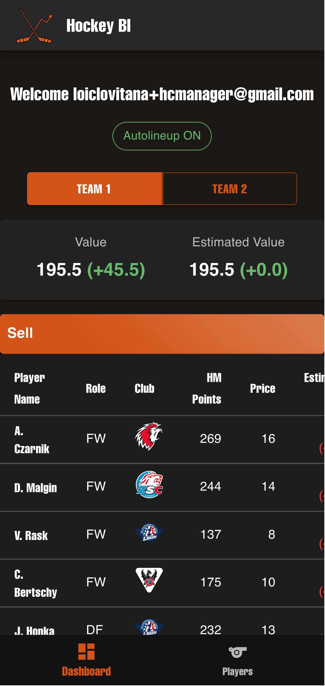
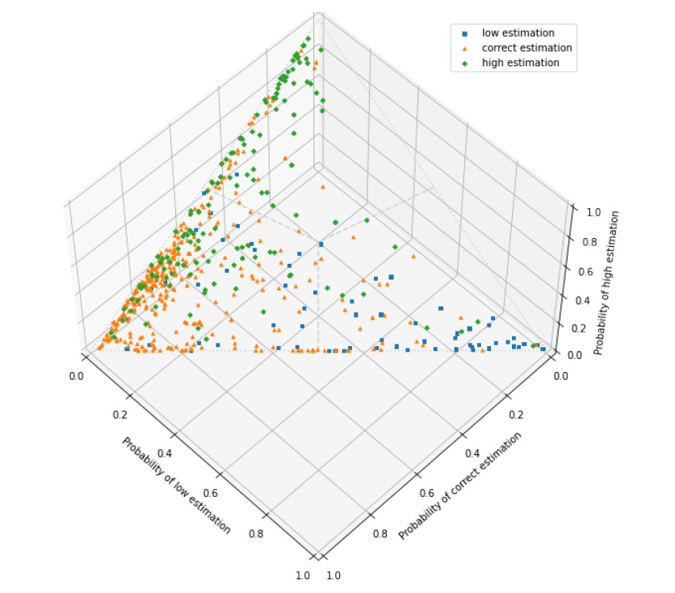
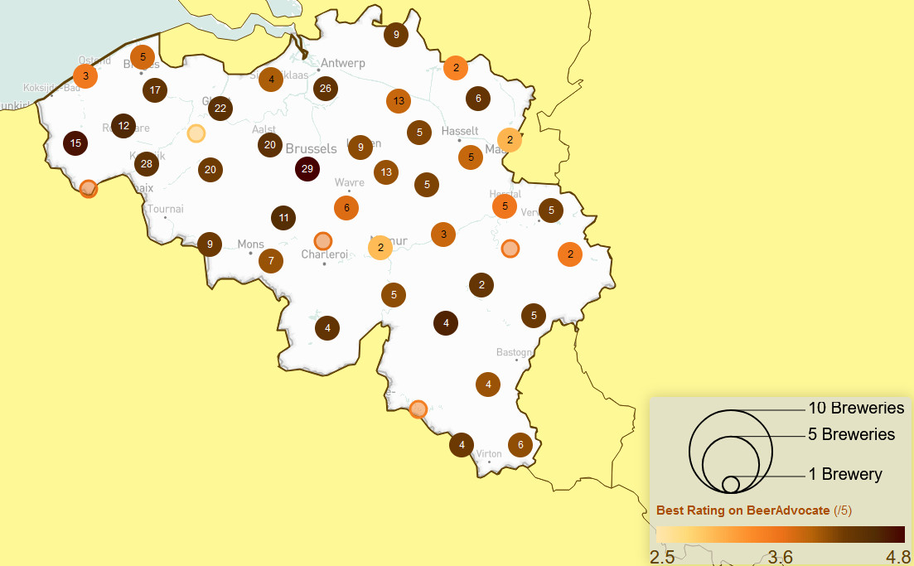

EPFL
École Polytechnique Fédérale de Lausanne
Master of Science (MSc) & Bachelor (BSc) in Computer Science
Data Scientist & Engineer
Based in Switzerland, and currently working at Anaxa.
With a wide range of experiences—from data analysis and machine learning to software development and system architecture—I bring a holistic approach to solving complex problems. Whether I'm diving into data-driven insights or crafting robust systems, I always focus on the solution that best meets the needs for both the team and end-users. My passion lies in building efficient, scalable and modulable systems and fostering collaborative teams that continuously innovate and improve.

With five years of experience working on large-scale projects, I have consistently demonstrated a deep understanding of business priorities and the critical stakes involved. My ability to contribute to important decision-making processes and guide new team members has proven me to be a valuable asset. I bring both leadership and strategic insight, making me a strong contributor to any project's success.
Anaxa Sàrl · Geneva, Switzerland
ELCA Informatique · Lausanne, Switzerland
ELCA Informatique · Lausanne, Switzerland

Give you an edge on Hockey Manager. Advice on selling and buying, automatically line up your team, and more.
See project
Use of random forests and LSTMs to predict incorrect deposits and prevent the accumulation of interest for self-employed people.
Learn more
Interactive visualization of beer around the world using a dataset from BeerAdvocate.
Try it yourself